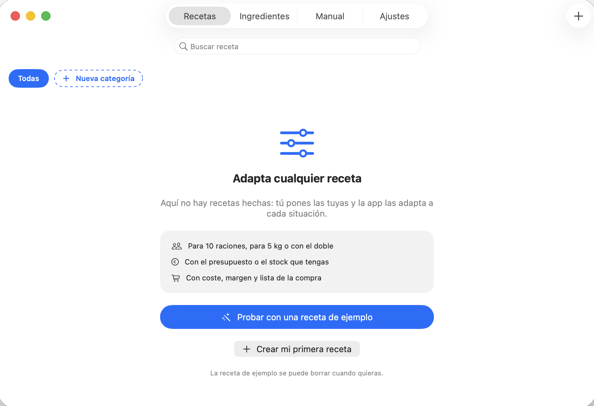
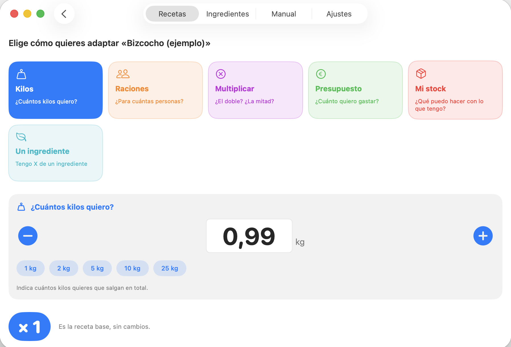
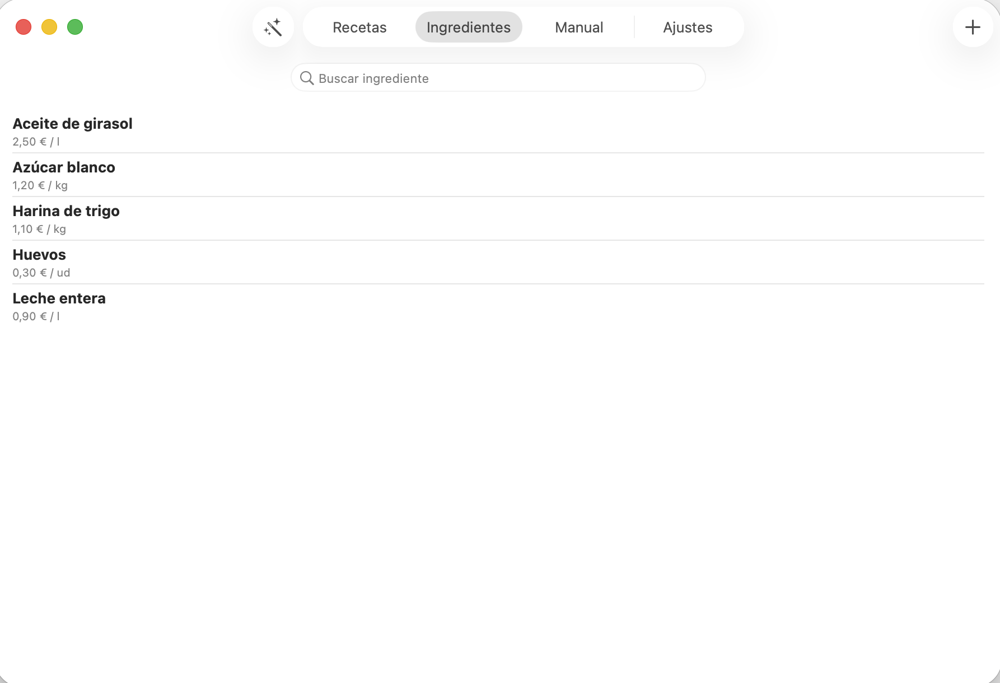
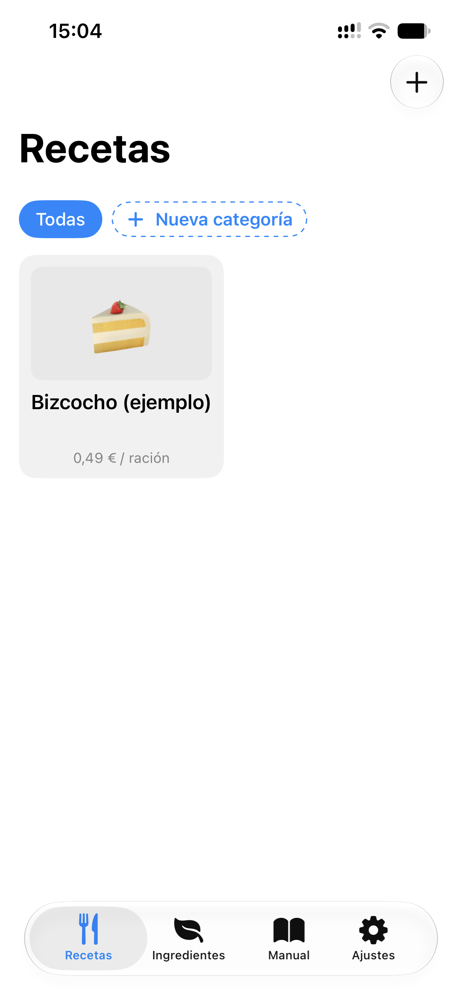
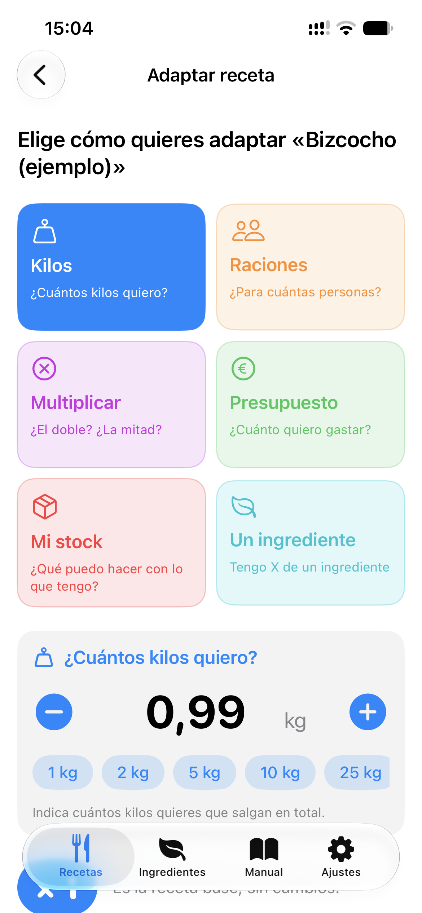

Mac · iPad · iPhone
Recetas Pro & Escandallos
Pon tus recetas y adáptalas a cada situación: para 10 raciones, para 5 kg o con lo que tienes en stock. Con coste, margen y lista de la compra al instante.
🎁 Prueba gratis: hasta 3 recetas y 15 ingredientes
Próximamente en la App Store
App StoreVer capturas

Características
Una receta nunca se cocina igual dos días.
Hoy son 10 raciones, mañana 5 kilos, y el viernes solo tienes la harina que tienes. Recetas lo recalcula todo.
⚖️
Adapta la receta
- Por kilos totales
- Por número de raciones
- Multiplicando (×2, ×0,5…)
- Por presupuesto disponible
- Con el stock que tienes
- Según el ingrediente que te falta o sobra
📊
Escandallos y costes
- Coste por ración y total, con mermas
- Costes extra: envase, mano de obra y gas
- IVA (4 %, 10 %, 21 %) o IGIC
- Margen real y precio de venta sugerido
- Comparación con la competencia
- Alertas de subida de precio y margen bajo
🗂️
Organizado para trabajar
- Subrecetas (una masa dentro de otra receta)
- Categorías de colores
- Los 14 alérgenos oficiales de la UE y personalizados
- Ficha técnica en PDF
- Importación de ingredientes desde CSV
- Copias de seguridad en archivo
Galería
Así se ve en Mac y iPhone.




¿Tienes un negocio con caja?
Combina Recetas con TPV+: importa tus ingredientes y vende con el margen de cada producto a la vista.